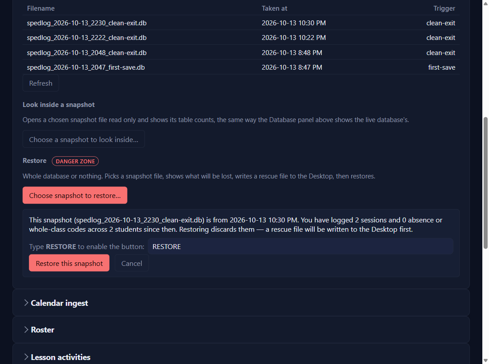

Keep it safe
Restore a backup
⏱ About 4 minutes🔁 Only if something went wrongYou need: the backup to go back to
Why: the app backs itself up every day you save. If something goes badly wrong, you can put the whole database back to a backup. It's whole-database or nothing: everything goes back to that moment.
1
Settings → Snapshots and restore → Choose snapshot to restore…
Pick a backup from the list's folder (or a copy you downloaded from Google Drive). The Snapshot log shows when each was taken.

2
Read what you'd lose
It says how many sessions and codes were logged since that backup. Those are what a restore discards.
3
Type RESTORE, click Restore this snapshot, and confirm
The button only works once the word is typed. You'll be asked once more.
4
Afterwards
Before it runs, the app writes a rescue file to your Desktop listing everything it discards, and takes a backup of what you had (so a restore can itself be undone). Then it reloads and shows the result.
✓ You'll know it worked
Restored from …. Discarded 2 sessions and 0 codes across 2 students. Rescue file: …
✕ Avoid these
- Restoring to fix one small thing. It replaces everything; correct the one thing instead.
- Skipping the rescue file. Retype what it lists.
⚠ If you see this
This database was created by a newer version of the app …The app on this computer is older than the one that made the database. Install the newest version, then open it again.